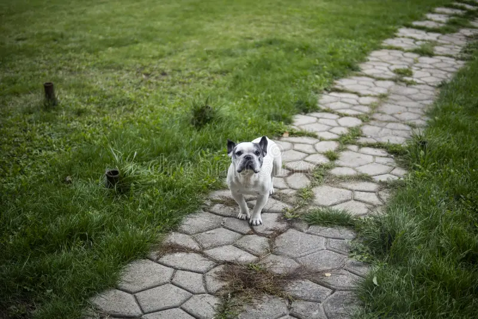

The Lost Dog

Continue reading to find out how Charlie, the lost dog, found his way back home.
Scroll down
Continue reading to find out how Charlie, the lost dog, found his way back home.
Scroll down
Charlie was playing outside with his ball until he heard a loud noise in the distance.
He wanted to know where the noise came from, so he followed it.
Charlie's house was nowhere in sight.
He strolled through dark streets, searching for his house or his owners.
He kept walking and walking but Charlie had no luck.
There had to be a way home.
Charlie recognized the park where his owners always took him for walks.
He felt a sense of releif.
Charlie sprinted down the road.

At the end of the street was the place he had been searching for all along.
Charlie ran through the doggy door and greeted his owners with lots of love.